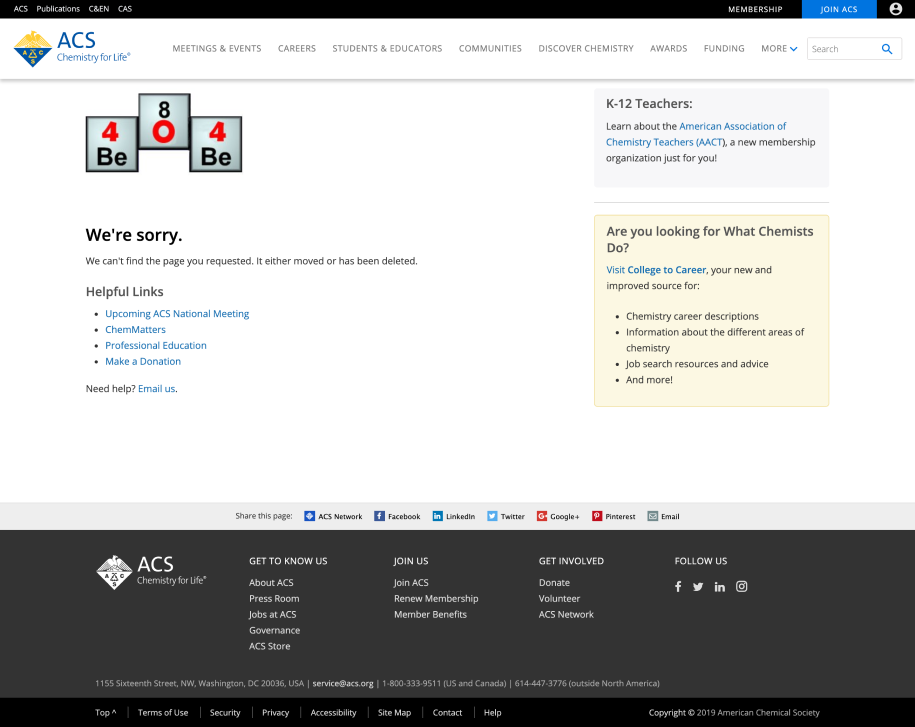

As a web design intern at the American Chemical Society (ACS), part of my work included redesigning and developing the collection of error pages on the main website. The collection consisted of seven different error pages: 401, 403, 404, 500, 503, SSO error, and the “e-Web unavailable” error. Shown below is a screenshot of the previous 404 page, and as you may see, it is not the most visually engaging page. The design team (of which I was a part) suggested that the page should be more interactive and attractive so that users could be more forgiving when landing on an error page. Of course, being ACS, the design had to feature some connection to chemistry.
Before I first tackled the key visual element of each page. In the screenshot, you can see that the 404 was made up of elements on the periodic table, clearly indicating a connection to chemistry. To modernize the design and make it look less like clip-art, after perusing Dribbble and Behance for inspiration, I decided on a flask design.
Ideation


The two images in the left column and the top right were what I initially came up with, and the last image is the general layout of the 404 page that we stuck with. My initial ideas, while more minimal and less cluttered, did not help guide users to their desired location, so I added in a section for useful links like the previous 404 page included. The rest of the team approved, so I went on to animating the flask. I knew GIFs were pretty much out of the equation, since they often are not high enough quality, and hand-coding an SVG animation was much too tedious (and frankly beyond my own abilities). Thankfully, I came across a plugin called Bodymovin, which Airbnb leveraged and extended in their library, Lottie, which exports animations created in Adobe After Effects to JSON. The JSON would then be rendered as responsive, SVG animations on the browser.
After
The design team and others in the department suggested for the error message to be written as a pun to keep a more lighthearted tone (and hopefully create a more forgiving response). The pun we came up with ultimately fit better with an animated atom than a flask, so the flask was incorporated into some of the other pages instead. With the user engaged upon seeing the animation, the “404” is also interactive thanks to the vanillatilt.js plugin, which creates a tilting/parallax effect upon mouseover on desktop and screen position on mobile. There is not much functionality to this aspect of the design other than to increase user engagement in order to appease users’ frustration, but even if the user was not frustrated to begin with, we still thought it was fun to see, especially when mobile users move their devices and the error message tilts accordingly.


We figured that some error pages would not be visited as often as others, with the 404 error being the most-visited one. As such, I decided that not all of the visual elements on each error page had to be related to chemistry, so long as some other portion of the maintained that connection. For example, the 403 error’s lock is not related to chemistry, but the error message pun uses two elements on the periodic table, sodium (Na) and bromine (Bro). The 503 page’s relation to chemistry is a little more subtle, but “periodically” in the error description below is supposed to reference the periodic table. In all, I am glad with how the pages turned out and was excited to see them published on a live site other than my own portfolio. Of course there are improvements that could have been made, namely performance ones since the pages rely on several scripts, but the redesigned version is definitely a step up from before.